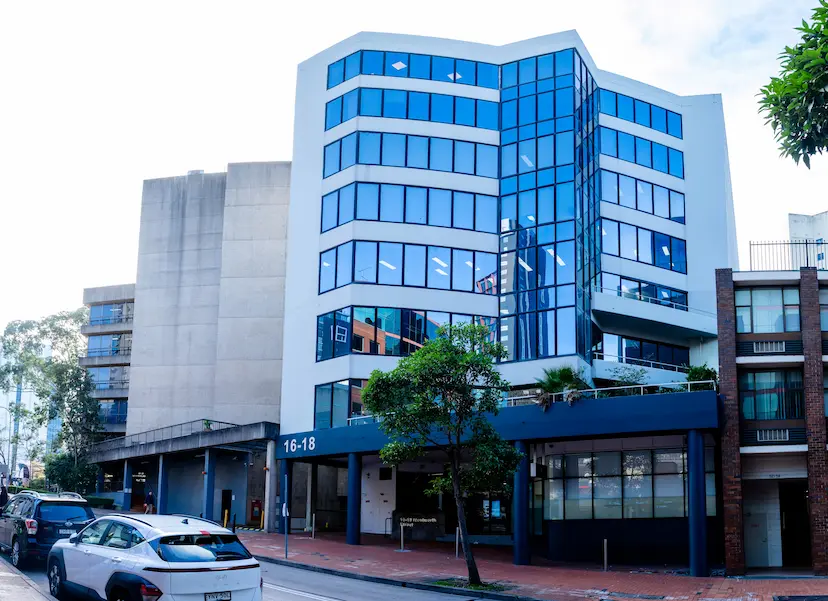
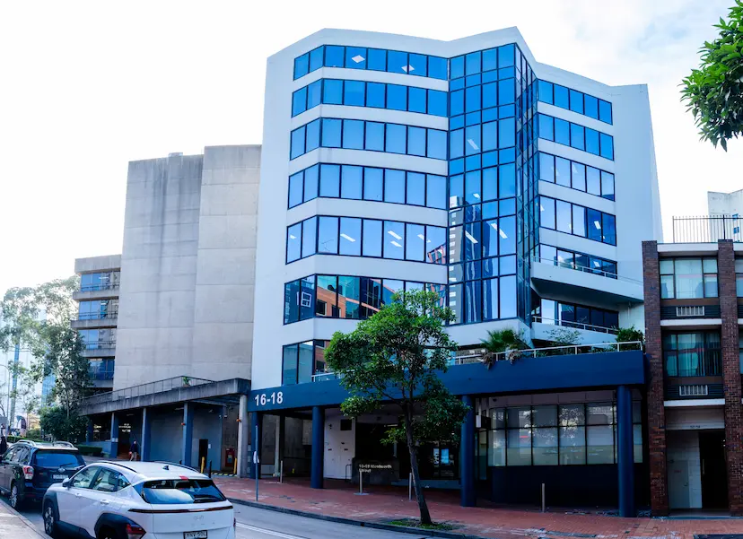

About Shri Ram College of Commerce

Established in 1926 by the distinguished industrialist and philanthropist Sir Shri Ram, Shri Ram College of Commerce (SRCC) is India’s foremost institution for higher education in the disciplines of Commerce, Economics and Management. Widely recognized as the preferred destination for meritorious students across India and beyond, SRCC has consistently ranked as the No. 1 College for Commerce in the country as per reputed national surveys including India Today’s Best Colleges Survey, Week-Hansa, Outlook-ICARE and Open Magazine among others. The College was awarded the highest possible ‘A++’ grade in 2023 by the National Assessment and Accreditation Council (NAAC).
Guided by its Vision of becoming “A College of Global Choice” and propelled by a Mission to achieve and sustain excellence in teaching and research while contributing meaningfully to local, national and international communities through scholarship and alumni engagement, SRCC is committed to embedding the highest standards of quality in all spheres of its functioning. With a legacy of nearly a century, the College has developed deep expertise in knowledge creation and dissemination grounded in ethics, values and societal relevance.
In pursuit of academic enrichment and internationalization, the College has established collaborations and partnerships with several distinguished institutions of higher education across the globe including those in the United States, United Kingdom, the Netherlands, Japan, Bhutan and Sri Lanka. Through its expanding global outreach, SRCC continues to shape responsible future-ready leaders equipped to navigate the complexities of a dynamic world.
SRCC Notable Alumni

Anshuman Jain
Former CO-CEO, Deutsche Bank
Nitasha Kaul
Former Author and Poet
Rakeysh Mehra
Renowned Film Director
Arun Jaitley
Former Union Minister of Finance
Rajat Sharma
Chairman, Editor-In-Chief, India TV
Nimrat Kaur
Renowned Indian Actress
Ishita Kishore
IAS, UPSC CSE AIR 1
About KPR College of Arts Science & Research


KPR College of Arts Science and Research (KPRCAS), established in 2019 and affiliated with Bharathiar University, Coimbatore, stands as a beacon of academic excellence under the leadership of the renowned KPR Group. The institution’s vision is to mold young minds into global leaders, preparing them for the challenges of an ever-evolving world. Promoted by the KPR Group—a distinguished entity in Indian textile, wind energy, automobile and sugar industries—the college is committed to providing quality education aligned with global industry standards. KPRCAS offers 19 undergraduate programs in Commerce, Management, Computer Science and Fashion, as well as 2 postgraduate programs in Commerce, along with research opportunities across these disciplines. The college aims to empower students with the skills and knowledge needed to thrive in a competitive global marketplace.
In addition to its academic programs, the college fosters student development through vibrant clubs such as the Entrepreneurship Club and the Ethics and Research Club, which focus on honing leadership skills and encouraging personal growth. Community-based initiatives such as NCC and NSS further shape students into responsible citizens, ensuring they emerge as well-rounded individuals prepared for leadership roles in society.
About Churchill Institute of Higher Education, Australia
 

Churchill Institute of Higher Education is located at Level 1, 16–18 Wentworth Street, Parramatta, NSW 2150—a major urban area of Sydney offering ample access to employment, social and accommodation opportunities. The campus is within walking distance of Parramatta Station, a central public transport hub and is close to major business facilities, with Sydney’s tourist attractions just a short train ride away
The campus is spacious and well-equipped, providing facilities specifically designed to foster excellence in teaching and learning. These facilities are allocated for academic instruction, student services, essential academic activities and general administration. New students joining Churchill Institute of Higher Education attend an Orientation Program held at the beginning of each semester, where they receive information about living, commuting and studying in Parramatta and Sydney
The campus features an in-house library where students and staff have access to a range of textbooks and online databases. The library is equipped with adequate computers, allowing students to easily access online resources and the library catalogue
OUR MISSION
To foster global dialogue and research around AI-enabled sustainable solutions by creating a platform for academic and industry interaction across continents.
KEY HIGHLIGHTS
- International Panel Discussions
- Presence of Government Dignitaries
- Paper Presentation
- Student Research Showcases
- AI and Sustainable Tech